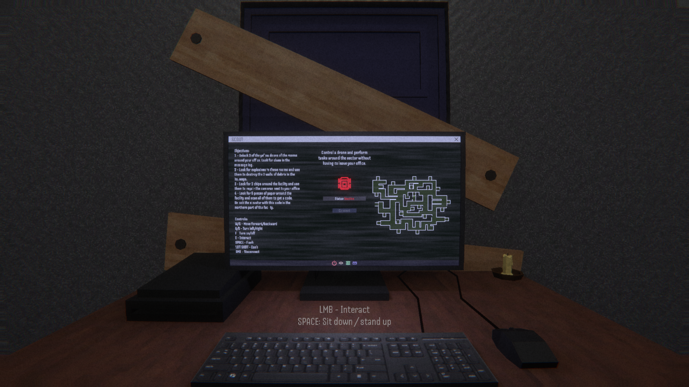
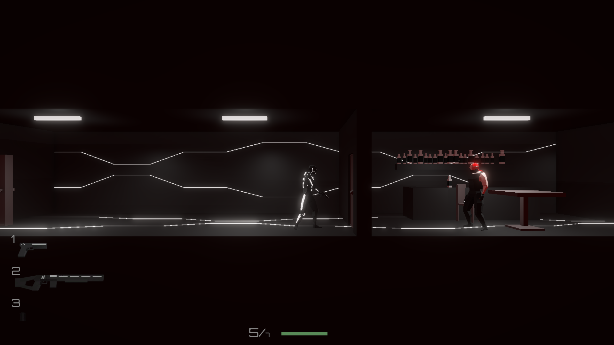

About Me
I am a dedicated game developer with a strong foundation in Unity C#, HTML, and
CSS. As the developer of PASSAGE and Nightmares Beyond, two independent horror games
on Steam and Itch.io, I have honed my skills in game design, development, and project
management. Currently, I am pursuing my Bachelor's degree at Saxion University of
Applied Sciences, where I am expanding my knowledge and expertise in software
development and interactive media.

PASSAGE
A short horror game about solving puzzles while surviving
from monsters with different mechanics.
Released on Steam in July 2022 and lastly updated in October 2024.
Learn More

Nightmares Beyond
A short horror game about piloting a rover through a facility
to find a way to escape while trying to outmaneuver monstrosities with unique mechanics.
Released on Itch.io in July 2025. Made in one month.
Learn More
CONNECT
A short horror game about playing a game of Connect 4 with a monster while
trying to survive from other present threats.
Unreleased, made in one week as a passion project.

Cyberspace Chaos
A 2D side-scrolling tactical shooter with stealth and weapon modification elements.
Currently in development.